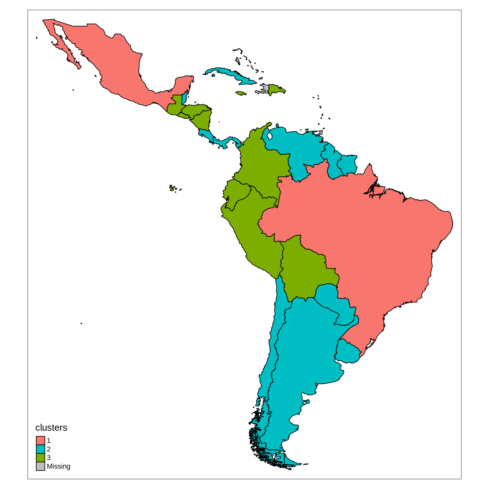

cluster_map.RmdThe country clusters are loaded from country_clusters.csv.
countries_shapefile <- join_database_shapefile( read_countries_database("countries_clusters.csv"), read_countries_shapefile() )
The map is then produced using tmap package.
colors <- c("#F8766D", "#00BFC4", "#7CAE00") tm_shape(countries_shapefile) + tm_fill(col = "clusters", palette = colors) + tm_borders(lwd = 1, col = "black")
